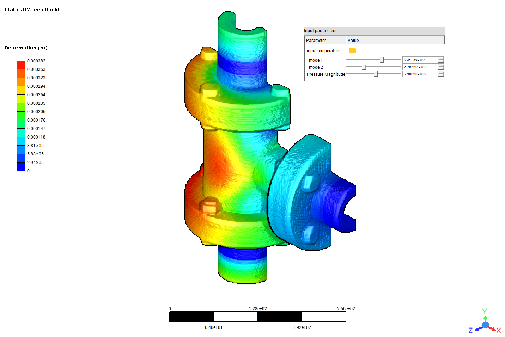

Note
Go to the end to download the full example code.
3D field ROM example for field snapshot input and output as Numpy array#
This example shows how the example given in 3D field ROM example for input field snapshot projection and snapshot generation on demand can be modified to take inputs as Numpy arrays, rather than reading from disk. Similarly, outputs are produced as Numpy arrays.
The results arrays will be unflattened and results combined into a DataFrame of x, y and z location and corresponding x, y and z displacement components.
Results will be exported for the whole model and a named selection consisting only of the bolts.
{kind=link}
# sphinx_gallery_thumbnail_path = '_static/TBROM_input_field.png'
Note
To be able to use the functionalities to generate an output field snapshot on demand, you must have a twin with one or more TBROMs.
To project an input field snapshot, one or more of the TBROMs must be parameterized by input field data.
To be able to use the functionalities to generate points file on demand for a TBROM, the geometry must have been embedded when exporting the TBROMs to Twin Builder, prior to building the twin.
The twin inputs and outputs must follow specific naming conventions, summarised here and described in detail in 3D field ROM example for input field snapshot projection and snapshot generation on demand.
If there are multiple TBROMs in the twin, the format for the name of the twin input must be
{input_field_name}_mode_{mode_index}_{tbrom_name}and the output must beoutField_mode_{mode_index}_{tbrom_name}.If there is a single TBROM in the twin, the format for the name of the twin input must be
{input_field_name}_mode_{mode_index}and the output must beoutField_mode_{mode_index}.
Perform required imports#
Perform required imports, which include downloading and importing the input files.
import numpy as np
import pandas as pd
from pytwin import TwinModel, download_file, read_binary
twin_file = download_file("ThermalTBROM_FieldInput_23R1.twin", "twin_files", force_download=True)
inputfieldsnapshot = download_file("TEMP_1.bin", "twin_input_files/inputFieldSnapshots", force_download=True)
Define auxiliary functions#
Define auxiliary function to unflatten a vector.
def unflatten_vector(vector: np.ndarray, dimensionality: int):
"""Unflatten a vector to array with specified number of columns."""
return vector.reshape(-1, dimensionality)
Define ROM inputs#
Define the twin scalar input pressure as 4 MPa.
scalar_input = {"Pressure_Magnitude": 4000000.0}
Read one vector input from a file (this input could have been generated by a separate program).
temperature_array = read_binary(inputfieldsnapshot)
Enter information regarding TBROM, input fields and output named selection (see 3D field ROM example for input field snapshot projection and snapshot generation on demand for examples of setting this programmatically).
romname = "test23R1_1"
fieldname = "inputTemperature"
out_ns = "Group_1"
input_name = "Pressure_Magnitude"
field_input = {romname: {fieldname: temperature_array}}
Load the twin runtime and generate displacement results#
Load the twin runtime and generate temperature results from the TBROM.
Loading model: C:\Users\ansys\AppData\Local\Temp\TwinExamples\twin_files\ThermalTBROM_FieldInput_23R1.twin
Evaluate the twin with one set of input values and collect corresponding outputs#
Because the twin is based on a static model, results for any inputs can be obtained by setting the initial input values to the desired values and running the initialization function.
# initialize twin with input values
twin_model.initialize_evaluation(inputs=scalar_input, field_inputs=field_input)
# generate the field output array on the entire domain
outfield = twin_model.generate_snapshot(romname, on_disk=False)
# generate the field output on "Group_1"
outfield_bolts = twin_model.generate_snapshot(romname, on_disk=False, named_selection=out_ns)
# generate the points location array for the whole domain
points = twin_model.generate_points(romname, on_disk=False)
# generate the points location array on "Group_1"
points_bolts = twin_model.generate_points(romname, on_disk=False, named_selection=out_ns)
Unflatten vectors and combine into DataFrame. Both point location and displacement have three components when unflattening.
Full results table:
x y z ux uy uz
0 0.000000000000 20.500000000000 63.900000000000 -0.000022676445 -0.000007411823 0.000052865856
1 4.649511030118 20.500000000000 65.265219617652 -0.000019859374 -0.000006857729 0.000053471027
2 7.822835160049 20.500000000000 68.927430888184 -0.000017849438 -0.000007524893 0.000055345678
3 8.512464400176 20.500000000000 73.723907609150 -0.000017359600 -0.000009429828 0.000057934634
4 6.499446339447 20.500000000000 78.131802311929 -0.000018478304 -0.000011935615 0.000060357393
... ... ... ... ... ... ...
104417 -22.082190395836 278.847782340126 22.925958081233 -0.000008267303 0.000013355841 0.000008686018
104418 -28.202723064351 267.915752025538 12.456531177246 -0.000001400765 0.000008837837 0.000000612639
104419 -25.772944541100 217.207183109828 23.286920211768 -0.000016712107 0.000002634787 0.000007296183
104420 0.452412968499 214.007611933540 33.306747725383 -0.000009092836 -0.000001948173 0.000012971703
104421 -18.251845983458 205.734785172493 38.919245779059 -0.000021904075 0.000011531835 0.000023193705
[104422 rows x 6 columns]
Repeat for the subset of results on the bolts only
disp_xyz = unflatten_vector(outfield_bolts, 3)
loc_xyz = unflatten_vector(points_bolts, 3)
results_bolts = pd.DataFrame(
{
"x": loc_xyz[:, 0],
"y": loc_xyz[:, 1],
"z": loc_xyz[:, 2],
"ux": disp_xyz[:, 0],
"uy": disp_xyz[:, 1],
"uz": disp_xyz[:, 2],
}
)
print(f"Bolt results table:\n{results_bolts}")
Bolt results table:
x y z ux uy uz
0 0.000000000000 20.500000000000 63.900000000000 -0.000022676445 -0.000007411823 0.000052865856
1 4.649511030118 20.500000000000 65.265219617652 -0.000019859374 -0.000006857729 0.000053471027
2 7.822835160049 20.500000000000 68.927430888184 -0.000017849438 -0.000007524893 0.000055345678
3 8.512464400176 20.500000000000 73.723907609150 -0.000017359600 -0.000009429828 0.000057934634
4 6.499446339447 20.500000000000 78.131802311929 -0.000018478304 -0.000011935615 0.000060357393
... ... ... ... ... ... ...
26193 5.365215157701 -19.973737738871 67.406774673048 -0.000009163648 -0.000028770279 0.000034626634
26194 5.519814179923 -20.500000000000 69.067558970773 -0.000008964800 -0.000029851127 0.000035325543
26195 4.864884965080 -19.973737716675 68.189211872924 -0.000009454929 -0.000029289763 0.000035071210
26196 -5.519814179923 -20.500000000000 69.067558970773 -0.000015171755 -0.000032449556 0.000035190673
26197 -4.864884965080 -19.973737716675 68.189211872924 -0.000014946633 -0.000031554289 0.000034938767
[26198 rows x 6 columns]
Total running time of the script: (0 minutes 1.628 seconds)